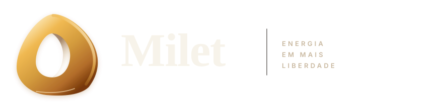
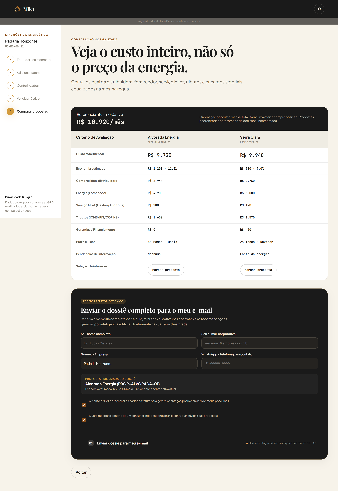
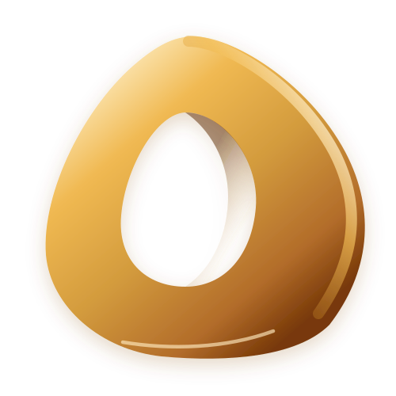

Pitch · Sebrae Supernova 2026
A Milet coloca fornecedores de energia para competir pela sua empresa e acompanha a economia depois que você assina.
Energia em mais liberdade01 O gancho
Mas escolher exige comparar. E comparar energia, hoje, é quase impossível.
Portaria MME nº 50/2022 — abertura do mercado livre para todo o Grupo A a partir de 01/01/2024.
02 O problema
Proposta A
R$ 289/MWh
Preço flat · contrato de 5 anos
Encargos e conta residual da distribuidora não incluídos.
Proposta B
18% de desconto
Sobre a tarifa atual*
*Base de cálculo não informada. Reajuste anual.
Proposta C
Preço fixo + flex
Flexibilidade de ±15% no volume
Multa rescisória e garantias no anexo III.
O decisor — dono ou financeiro — assina por anos sem conseguir responder. Exemplos ilustrativos.
03 A dimensão
72mil
empresas de pequeno e médio porte com potencial de migrar após a abertura do Grupo A.
CCEE, estimativa de 2023
21,7mil
migrações para o mercado livre em 2025 — serviços e comércio somam quase metade.
CCEE, balanço 2025
−36,5%
no ritmo de migrações do 1º trimestre de 2026 em relação ao mesmo período de 2025.
CCEE, 1T2026
CONFERIR os três números na base oficial da CCEE antes de entregar
04 O que descobrimos
i.
Gestoras digitais já cotam com dezenas de fornecedores, e o Decreto nº 13.097/2026 prevê um comparador público da CCEE.
ii.
Corretores e comercializadoras são remunerados pelo fornecedor. A empresa raramente tem alguém só do seu lado.
iii.
Reclamações públicas se concentram no pós-contratação: cobranças, cancelamento e economia que não aparece na conta.
Pesquisa de mesa: regulação ANEEL/CCEE, 12 concorrentes e avaliações públicas. + RESULTADO DAS ENTREVISTAS: nº de decisores PME e comercializadoras ouvidos e a frase mais marcante
05 A solução
01 · Entender
A Milet lê os dados e monta o Passaporte Energético da empresa: consumo, demanda, contrato e distribuidora.
02 · Comparar
Mercado livre, solar própria ou compartilhada. Depois, custo total, prazo e risco lado a lado. Nenhuma oferta compra posição.
03 · Acompanhar
Economia prevista versus realizada, alertas de vencimento e nova cotação antes de o contrato acabar.
06 O MVP

07 Concorrência e diferencial
| Corretor tradicional |
Comercializadora | Gestora digital | Comparador CCEE (previsto) |
Milet | |
|---|---|---|---|---|---|
| Compara rotas (mercado livre, solar, GD) | ◐ | — | ◐ | — | ✓ |
| Compara vários fornecedores | ◐ | — | ✓ | ✓ | ✓ |
| Sem vínculo com fornecedor ou grupo de energia | ◐ | — | ◐ | ✓ | ✓ |
| Acompanha depois da assinatura | ◐ | ◐ | ✓ | — | ✓ |
| Dados da empresa portáveis (Passaporte) | — | — | — | ◐ | ✓ |
✓ sim · ◐ parcial · — não. Leitura a partir da comunicação pública das empresas (out/2026). Na Milet, acompanhamento e Passaporte completo estão em construção.
08 Modelo de negócio
Demanda
Decisão clara, propostas comparáveis e acompanhamento depois de assinar.

Oferta
Demanda qualificada e dados organizados, prontos para cotar.
09 Validação
Feito
MVP navegável no ar, leitura de fatura, captação com consentimento LGPD e BMC bilateral entregue na Supernova.
+ nº de diagnósticos / visitas / cadastros reais, se houver
Próximas 4 semanas
10 decisores de PMEs e 5 comercializadoras entrevistados. Primeiros diagnósticos reais em modo concierge.
critério de sucesso: ex. 3 de 5 comercializadoras dispostas a pagar por lead qualificado
Hipóteses críticas
10 Próximos passos
Agora
Decisores de PMEs e comercializadoras.
mês/ano
20 a 50 empresas com diagnóstico e propostas reais.
mês/ano
Execução com comercializadoras parceiras habilitadas.
mês/ano
Economia realizada e nova cotação antes do vencimento.
11 Equipe
Fundador · Eng. de Computação
Produto e tecnologia
Fundador · curso
área no projeto
Orientadora · instituição / área
trocar as iniciais por fotos (círculo 240×240)